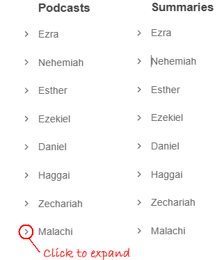
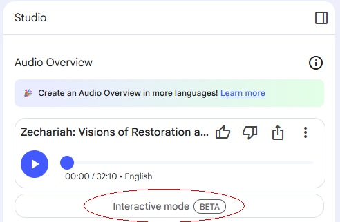

Blessed Lord's Day to you all!
I'm gearing up for Exile & Return. I want to share the prework I'm doing to get ready for another amazing year in God's Word. I've been waiting about ten years for BSF to get to this lesson. Maybe I'll finally learn why God didn't allow Israel (the Northern Kingdom) to return from exile — only Judah (the Southern Kingdom) got to go back. I'm guessing it was because every single Northern king was evil, whereas only about 60% of the Southern Kingdom's kings were evil. God grades on a curve, you know. Not! Actually, I'm sure it has more to do with them all being from the line of David.
What I've put together to get ready are two simple things — one from AI, one from Logos. First, a podcast for each book that gives an excellent overview and is easy to listen to. No worries about anything outside the Bible being included — I constrained AI to only use the Bible book itself. Second, I have a book in my Logos library I've liked for a long time called The Key Ideas Bible Handbook by Ron Rhodes. It gives an excellent summary of every book in the Bible.

References — the podcast notebooks for each book, if you want to listen along:
One more thing I forgot to mention — in each of these podcasts you can actually interrupt as if you were calling in, and it stops, answers your question, then resumes right where it left off. It's still in BETA release, but I think it works perfectly.

Comments